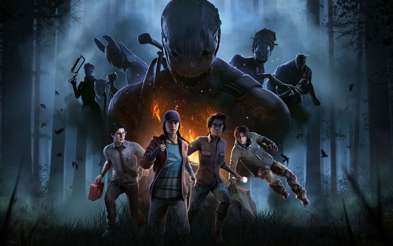

Adamovi Baďurovi je 18 let. Žije v Opavě, přesněji v Kateřinkách. Vychodil zde základní školu „Vrchní“ a nyní studuje na Obchodní Akademii, která je taky v Opavě. Studuje zde IT a rozšiřuje své dovednosti. Adamovým velkým koníčkem je být DJ a Mixování písniček. Taky se jednu dobu věnoval děláním beatů a phonk hudby, anebo hardstyle či techna. Mezi jeho koníčky patří také hraní her. Jako jeho kamarád a spoluhráč můžu dokázat že velmi dobrý. Hraje hlavně League of Legends, Rust a hrával profesionálně Dead by Daylight. Být profesionálním hráčem je sen každého mladého kluka, pojďme se podívat jaké to je.
Nevím. Asi ještě když jsem byl malé dítě ve školce.
Netuším to je velmi dobrá otázka, ale myslím si, že jedna z první her byla Metin 2.
Půl roku, co hra vyšla ale věděl jsem o ní už od beta verze což bylo v roce 2016, a ne nevěděl jsem, že budu někdy hrát profesionálně.
Potkal jsem kamaráda co měl kamaráda který znal jeden tým složený z EU hráčů co zrovna někoho hledali, tak jsem to zkusil a na po prvé jsem se tam nedostal, ale po druhé mě vzali jako náhradu a po první turnaji kdy jsem hrál, tak jsem ukázal, že nejsem člověk co by měl být jako náhradník, dokonce jsem byl i MVP toho turnaje, hned po tom první turnaji jsem začal hrát v main rosteru.
Jak jsem říkal byl to evropský team a domluva byla čistě v angličtině a nikdy jsem s tím neměl problém.
Dohromady tři. První byl ten, o kterém jsem dosud mluvil, byl to sice fajn team ale nemělo to budoucnost, takže jsem já, a ještě jeden člověk odešli do čistě britského teamu a šlo poznat, že to bylo velmi dobré rozhodnutí, protože krátce potom, co jsme začali s nimi hrát tak jsme se na jeden celý split staly nejlepší team na světě.
No tak znamenalo to, že celý ten split jsme neprohráli ani jednou, a ostatní teamy nás viděli jako obrovskou hrozbu, když měli proti nám hrát. Co se týče výher tak se mi o tom moc nechce mluvit, ale jako celý team, co jsme si vydělali čistě z hraní bylo něco okolo 4000eur, a to není všechno.
Jak se to vezme určitě velká většina lidí mě znala a měl jsem i svojí fan base v české komunitě, tím myslím lidi, co koukali na naše zápasy čistě kvůli toho, že jsem hrál já.
Přestal jsem, protože jsem věděl že ta hra nemá budoucnost a měl jsem pravdu celá kompetitivní scéna skoro skončila a není to co byla, když jsem ještě hrával. Ale i přesto se furt s lidmi se kterýma jsem hrál bavím do dnes a jsou to lidi co mi pomohli v takové zvláštní etapě života.
Furt bych do toho šel, říkám pomohlo mi to pochopit, že hraní her není všechno a nenaplňuje mě to, jak jsem si myslel a otevřelo mi to oči se věnovat jiným zájmům.
Vždycky jsem hudbu miloval a jednou v prváku jsem si řekl, že ji zkusím i sám dělat a není to lehká věc, ale baví mě. A k Djingu jsem se dostal tak, že si můj bratr jednou koupil mixovací pul a začal jsem ho používat a od té doby i mixuju a zlepšuju se v tom.
Co se týče vybavení tak ani moc ne mixovací pulty se dají pořídit i klidně do 2000kč, ale lepší pulty, na kterých třeba hrají Djové v klubech nebo na festivalech můžou stát klidně něco mezi 150-200 tisíci kč. Takže ano djing může být drahý, ale zároveň nemusí.
Obojí každý někde musí začít a Djing je o tom si vybudovat svoje jméno a taky jaký DJ daný člověk chce být, protože je dost druhu jako je třeba Klubový DJ, festivalový DJ, Svatební DJ, scratchovací DJ, je toho dost ale osobně je nejlepší hlavně někde začít a pak se ubírat dal tím daným směrem.